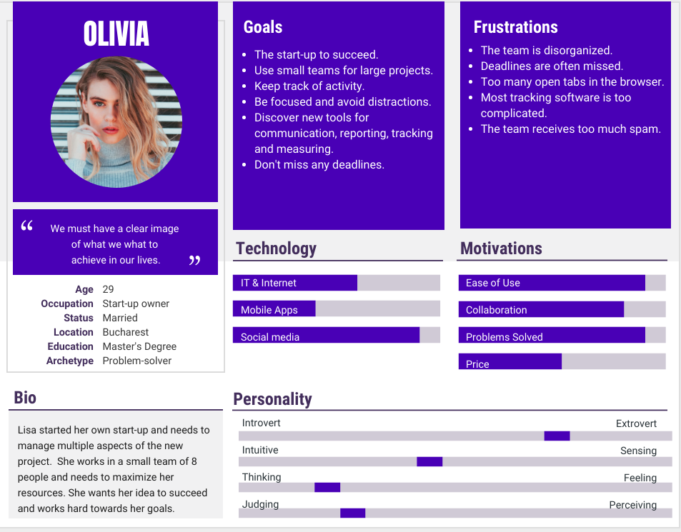

Interviews with potential users
Interview subjects
- We have interviewed a start-up owner. She is 23 years old and she started a bussiness for renting costumes for kids. We will reference her answers as I1.
- We have also interviewed a software programmer. He is 27 years old and he works on multiple projects every day. We will reference his answers as I2.
- Another interviewed subject that provided us precious information was a 48 years old lady. She works for a small family bussiness. We will reference her answers as I3.
Interview structure
We have organized our face-to-face interviews around the following questions:
- Describe shortly a day at your workplace.
- How do you organize your daily tasks?
- What is the biggest problem that you confront yourself with everyday regarding organization?
- What task management systems have you used? Why did you use these products?
- What shortcomings did you encountered using these task management systems?
- If you could choose a new functionality for a new task management system to implement, what would that be?
Interview with Loredana Burlacu
Loredana is a business owner. She is 23 years old and started a bussiness for renting costumes for kids, with the help of her boyfriend and some friends.
Interview with Cosmin Grozea
Cosmin is a software developer. He is 25 years old and works in collaborative environments for 2.5 years.
Interview with Mirela Ilie
Mirela works in sales for a small family business. She is 50 years old and has been working in her position for more than 10 years.
User persona
User stories
- "As a user, I want all the tools I need in one place."
- "As a member of a collaborative team, I need to follow the status of the tasks of the team."
- "As a member of a collaborative team, I need to add new tasks for the team."
- "As a member of a collaborative team, I need to be able to add new information to existing tasks."
- "For my productivity, I want to be able to track my tasks using to-do lists."
- "For my productivity, I want to set deadlines to my tasks."
- "For my productivity, I want to check my events and tasks in the calendar."